The city of Burlington is very walkable but if you want to venture further a car is needed. There is also a public bus, Green Mountain Transit, that is super reliable.
Using the Transit app, you can input your current location and where you want to go, then it will give you a close bus stop with a route you’ll want to take. You can track the bus on the map as it is making its way toward you.
For a single fare it is $2.00 but if you’re a UVM student it’s free as long as you show your cat card.
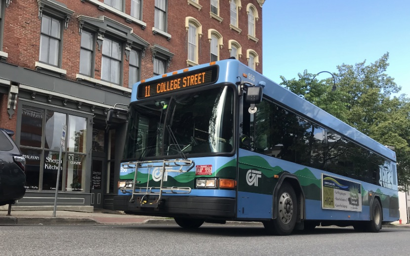
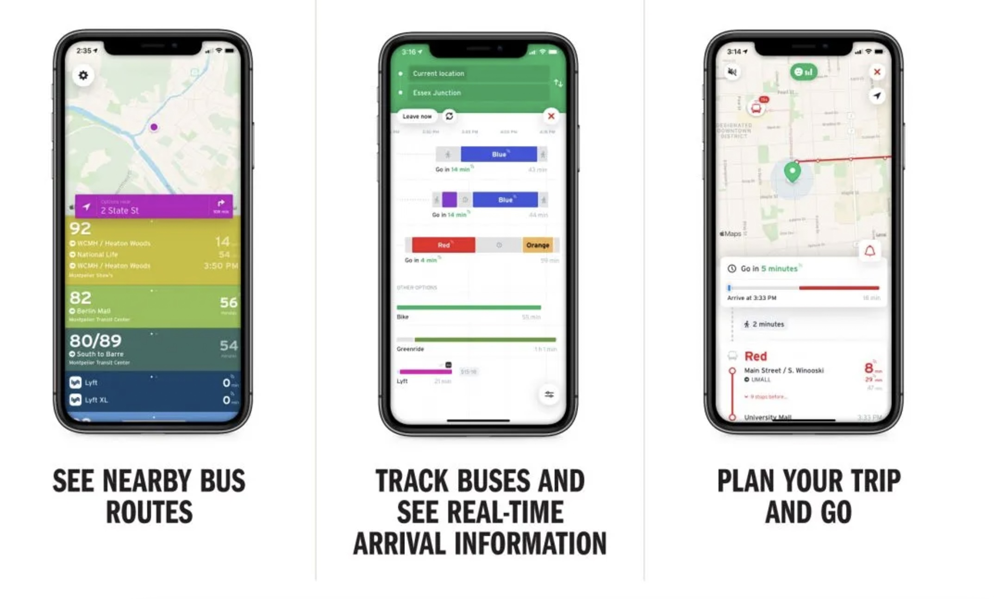
The Different Seasons in Burlington
Winter
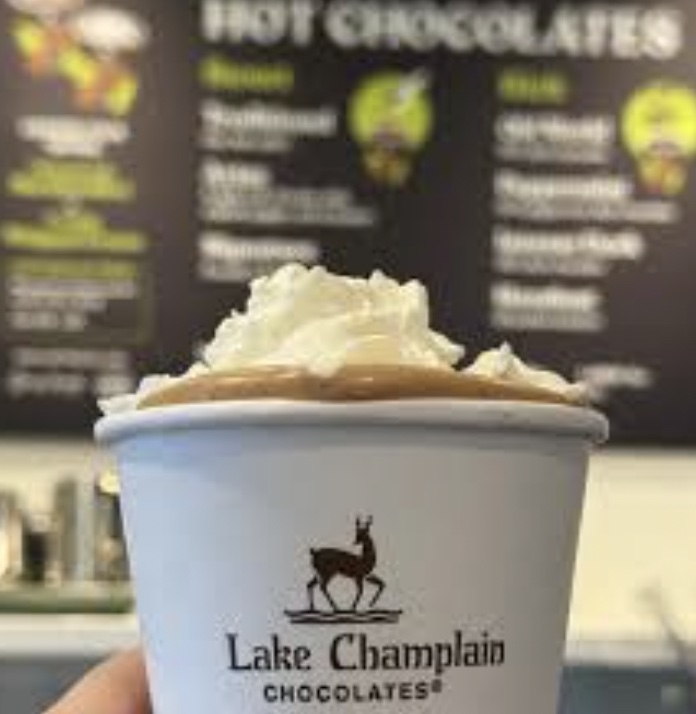
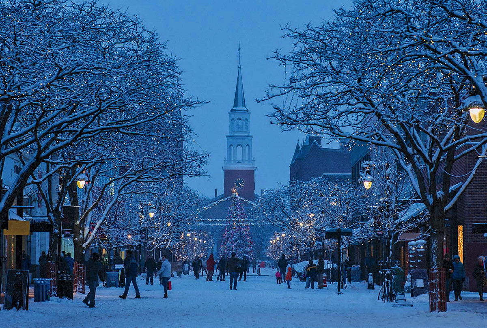
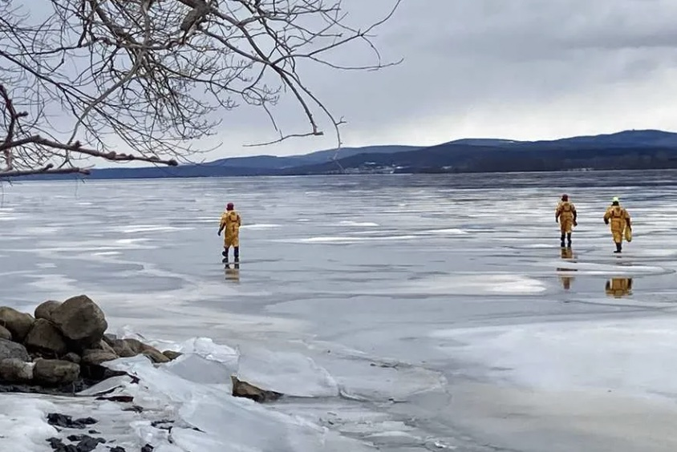
Coming to Vermont to ski or snowboard?
Stop into Burlington, it’s just a 20 minute drive from Bolton.
Burlington is quite magical in the winter, walking down church street while it’s snowing and the trees are covered in lights is such a pretty sight.
Getting cold from walking around, stop into Lake Champlain Chocolates to pick up a delicious hot chocolate.
Spring
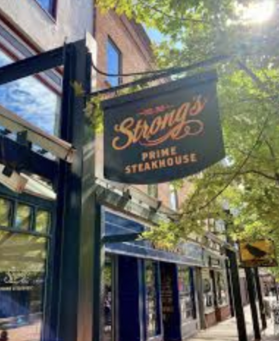
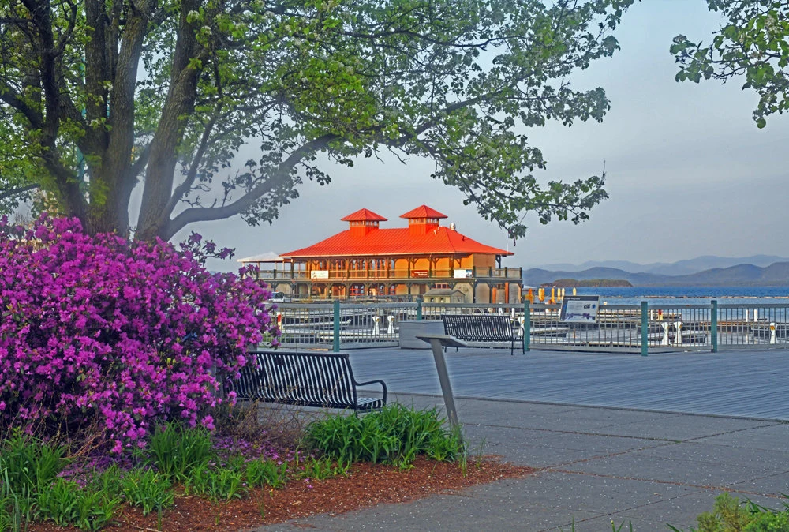
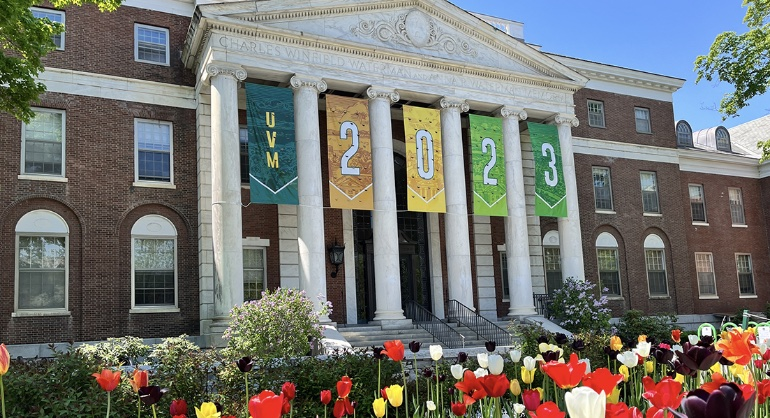
Spring, known as mud season, is probably the least favorable time to visit Burlington.
The one benefit is it hosts less crowds until mid-May when UVM seniors graduate and many families come up to celebrate.
Have a student graduating in May?
Take that broke college student out for a nice steak at E.B. Strong’s Prime Steakhouse.
Despite it being mud season, watching the birds return and the plants coming back to life is still an amazing thing to witness in Burlington.
Summer
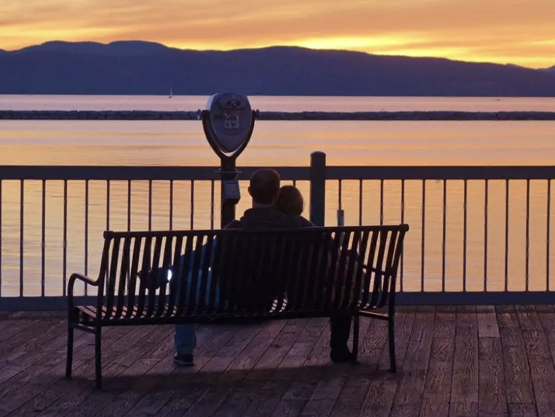
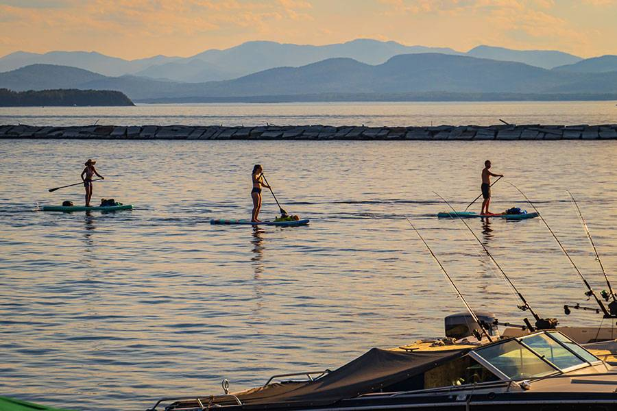
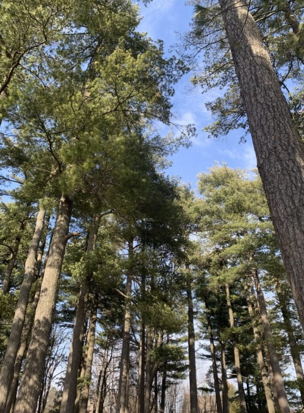
Summer in Burlington is a very fun time with endless outdoor activities to do when it’s not raining.
You’ll see many locals picnicing at Waterfront Park or hammocking in the redstone pines.
It’s the perfect time to get any water activities done, do check that the water is safe to enter incase of an increase in cyanobacteria.
Fall
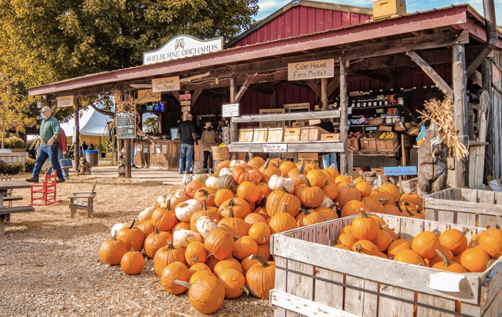
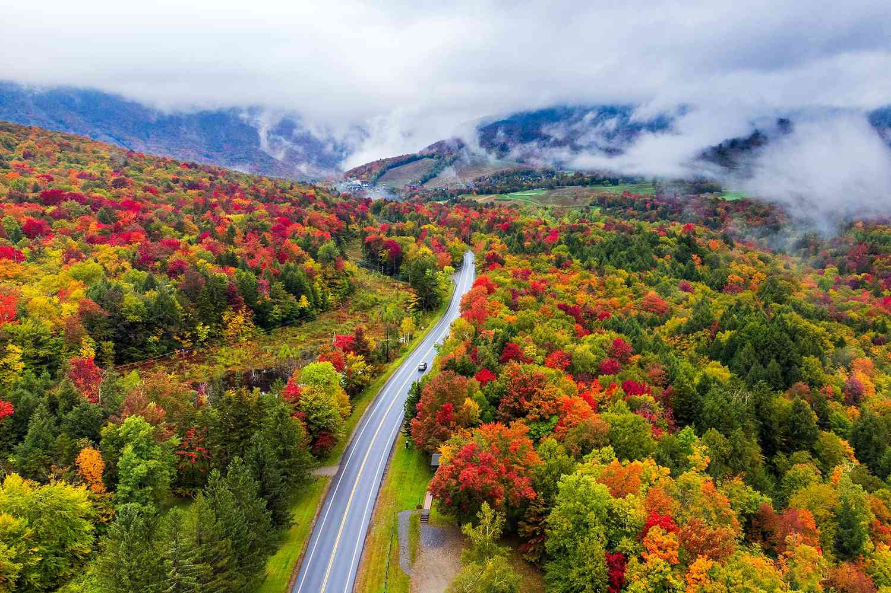
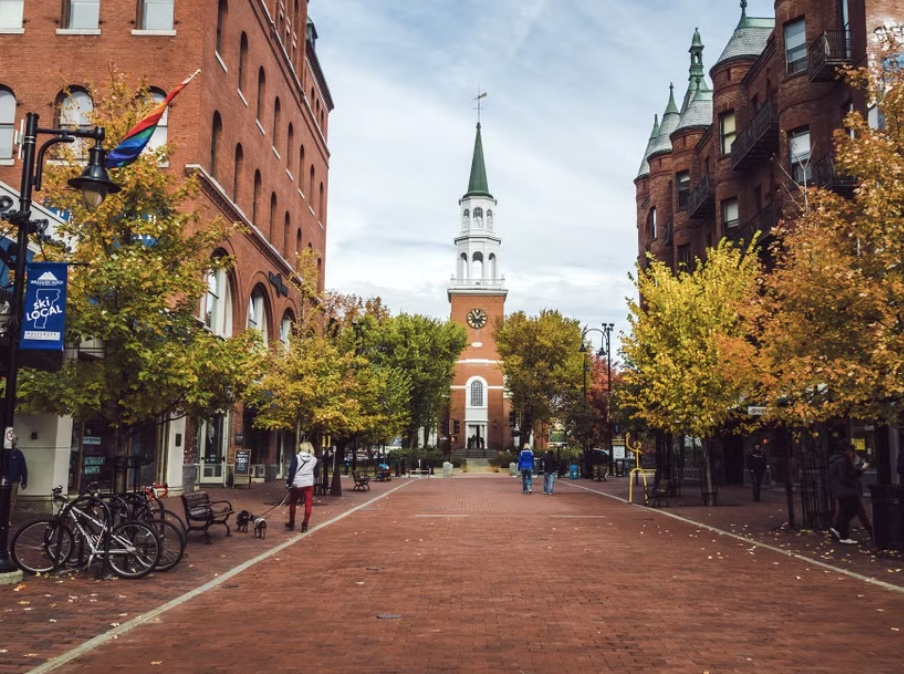
Burlington during fall time is gorgeous! You do have to watch out for crowds as many leaf peepers come to visit Vermont to watch the changing of colors.
There’s many apple orchards near Burlington like Shelburne Orchards and Adams Apple Orchard.
Walking through deciduous forests around Burlington like Centennial is always a beautiful experience.